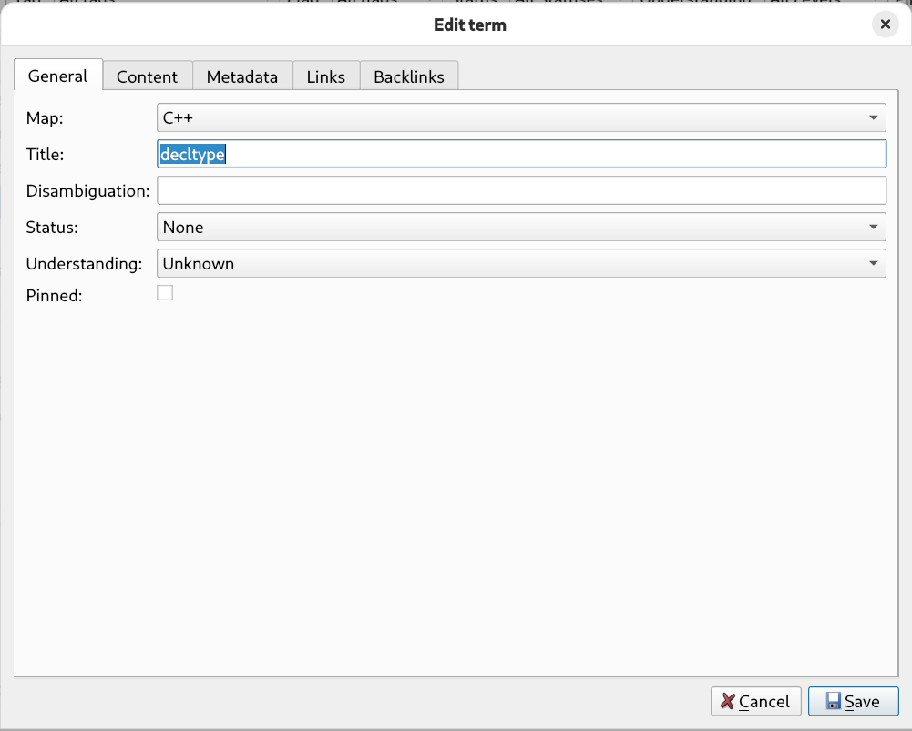
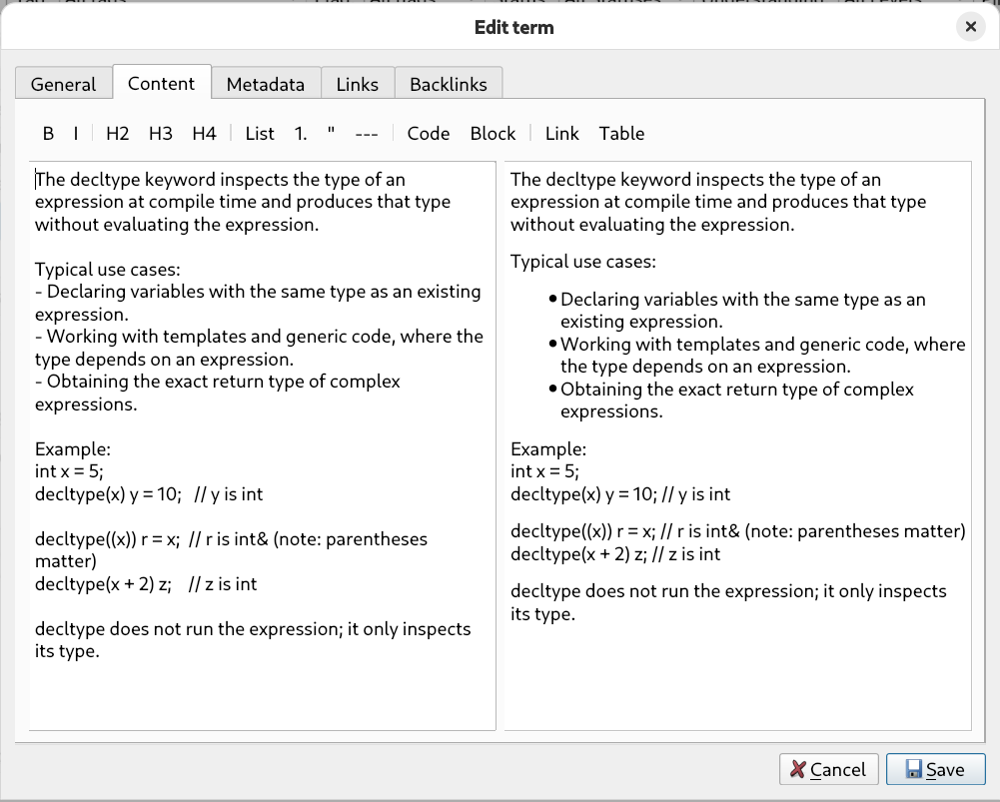
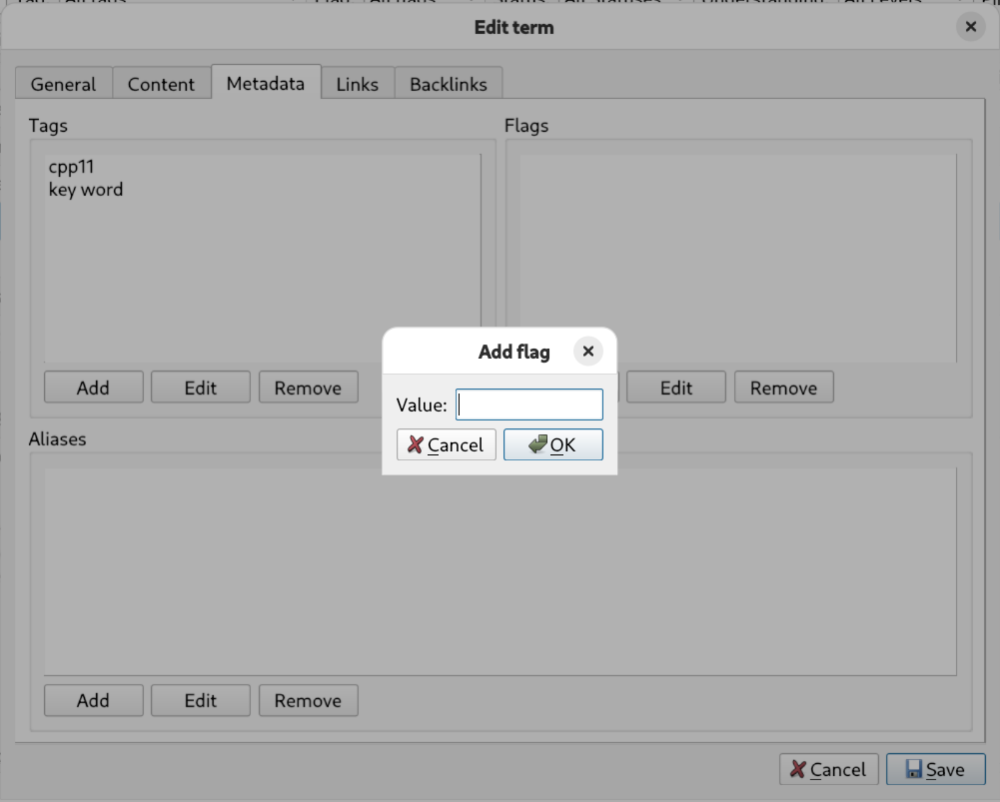

A tour of Lexicon's interface. Click any image to view it full size.
Main windowFilters, searchable item table, pagination, rendered Markdown content, and link/backlink preview — all in one screen.

Item editor — General tabBasic identity and state of an item: group, title, disambiguation, status, understanding level, and pinned flag.

Item editor — Content tabMarkdown editor on the left, live rendered preview on the right, plus a formatting toolbar.

Item editor — Metadata tabManage tags, flags, and aliases with dedicated add/edit/remove controls.Item editor — Links tabCreate and maintain outgoing typed relationships to other items.Item editor — Backlinks tabCreate and maintain incoming relationships — see who references this item.